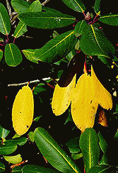

Introduction History Spring Tour Other Seasons Companion Plants Fruit/Veg/Berries Work Family Links ARS VISITING THE GARDEN DESIGN ELEMENTS SPECIMENS TIPS GARDEN FURNITURE
Fall Companions More Fall Companions Azaleas in Fall Fall Japanese Maples Fall Mushrooms Fall Color in Rhododendrons
|
|
When we imagine fall we usually see large masses of saturated colors, but a closeup look can dazzle in a different way. Even large leaf rhododendrons change color, often brilliantly. The isolated intensity of a few previous year's leaves contrasts vividly with current year foliage. |  |

|
The complementary colors of the old and new leaves on Tiffany create a striking effect since the pattern is quite uniform over the entire plant. |
 Leaves are not the only rhododendron color in the fall. Ostbo's Red Elizabeth usually blooms twice a year, as shown in this October 15th picture. Note also the blackish purple new growth of summer. |

Introduction History Spring Tour Other Seasons Companion Plants Fruit/Veg/Berries Work Family Links ARS VISITING THE GARDEN DESIGN ELEMENTS SPECIMENS TIPS GARDEN FURNITURE
© 2001 by John and Doreen Anderson